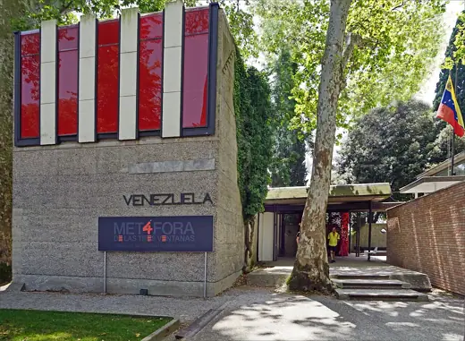
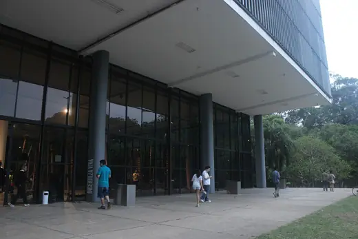
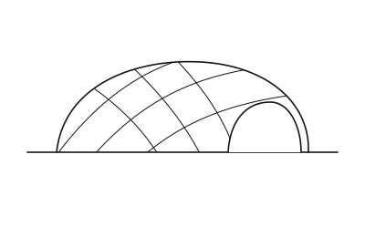
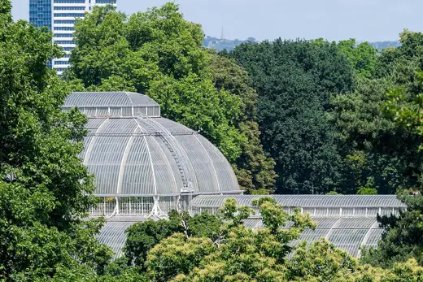
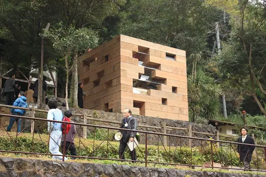
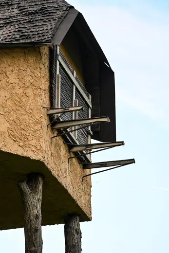

Buildings 44
Sort
 Barcelona Pavilion1929 · Barcelona
Barcelona Pavilion1929 · Barcelona Atomium1958 · Brussels
Atomium1958 · Brussels
Venezuela Pavilion, Venice Biennale1956 · Venice Trenton Bath House1955 · Ewing
Trenton Bath House1955 · Ewing Pavillon Le Corbusier1967 · Zurich
Pavillon Le Corbusier1967 · Zurich Xylem2019 · Fishtail
Xylem2019 · Fishtail Orquideorama, Medellín Botanical Garden2006 · Medellín
Orquideorama, Medellín Botanical Garden2006 · Medellín Phipps Conservatory1893 · Pittsburgh
Phipps Conservatory1893 · Pittsburgh Biosphere (Bigo)2001 · Genoa
Biosphere (Bigo)2001 · Genoa Bug Dome2009 · Shenzhen
Bug Dome2009 · Shenzhen ArcelorMittal Orbit2012 · London
ArcelorMittal Orbit2012 · London Royal Exhibition Building1880 · Melbourne
Royal Exhibition Building1880 · Melbourne BUS:STOP Krumbach2014 · Krumbach
BUS:STOP Krumbach2014 · Krumbach
Bienal Pavilion (Pavilhão Ciccillo Matarazzo)1954 · São Paulo Murinsel2003 · Graz
Murinsel2003 · Graz Norwegian Wild Reindeer Pavilion2011 · Hjerkinn
Norwegian Wild Reindeer Pavilion2011 · Hjerkinn Dutch Pavilion, Venice Biennale1954 · Venice
Dutch Pavilion, Venice Biennale1954 · Venice
ICD/ITKE Research Pavilion 20122012 · Stuttgart Climatron1960 · St. Louis
Climatron1960 · St. Louis Montreal Biosphère1967 · Montreal
Montreal Biosphère1967 · Montreal New York State Pavilion1964 · New York City
New York State Pavilion1964 · New York City Portugal Pavilion1998 · Lisbon
Portugal Pavilion1998 · Lisbon Hall of Nations1972 · New Delhi
Hall of Nations1972 · New Delhi Veles e Vents2006 · Valencia
Veles e Vents2006 · Valencia China Pavilion, Expo 20102010 · Shanghai
China Pavilion, Expo 20102010 · Shanghai Vitra Conference Pavilion1993 · Weil am Rhein
Vitra Conference Pavilion1993 · Weil am Rhein Cepelia Pavilion1966 · Warsaw
Cepelia Pavilion1966 · Warsaw Japan Pavilion, Expo 20002000 · Hanover
Japan Pavilion, Expo 20002000 · Hanover
Palm House, Kew Gardens1848 · London Werkraum Haus2013 · Andelsbuch
Werkraum Haus2013 · Andelsbuch Apollo Pavilion1969 · Peterlee
Apollo Pavilion1969 · Peterlee Penguin Pool, London Zoo1934 · London
Penguin Pool, London Zoo1934 · London Nordic Pavilion1962 · Venice
Nordic Pavilion1962 · Venice Netherlands Pavilion, Expo 20002000 · Hanover
Netherlands Pavilion, Expo 20002000 · Hanover Royal Greenhouses of Laeken1905 · Brussels
Royal Greenhouses of Laeken1905 · Brussels Palazzo del Lavoro1961 · Turin
Palazzo del Lavoro1961 · Turin Palmenhaus, Burggarten1906 · Vienna
Palmenhaus, Burggarten1906 · Vienna Tanzbrunnen (Star Wave Tent)1957 · Cologne
Tanzbrunnen (Star Wave Tent)1957 · Cologne
Final Wooden House2008 · Kumamoto Flower Kiosk, Malmö Eastern Cemetery1969 · Malmö
Flower Kiosk, Malmö Eastern Cemetery1969 · Malmö
Takasugi-an2004 · Chino Nur Alem2017 · Astana
Nur Alem2017 · Astana